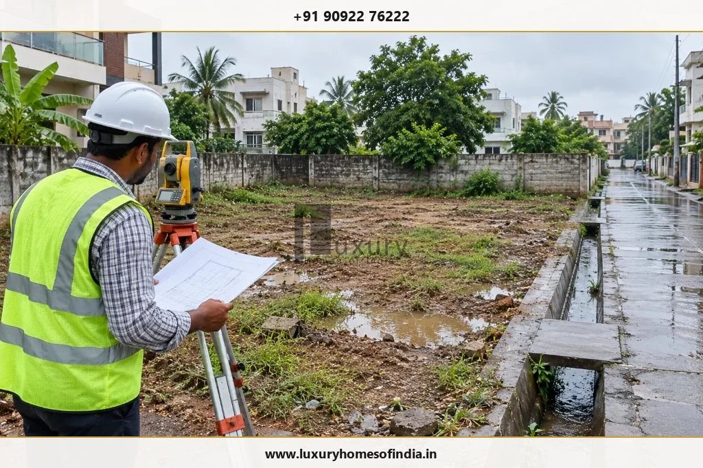

Choosing a home builder requires more than comparing construction rates. Before hiring a builder in Chennai, ask about relevant project experience, architectural and structural coordination, detailed quotations, material specifications, construction timelines, quality inspections and post-handover responsibilities.
Request written evidence wherever possible, including a scope of work, drawings, a payment schedule, a construction programme and a draft agreement. If you are planning a luxury villa, also clarify bespoke finishes, interior coordination, building services and the approval process.
These 30 questions will help you compare builders using consistent criteria, identify potential risks before signing a contract and understand what each company has actually committed to deliver. The goal is not simply to find the lowest quotation; it is to select a construction partner whose capabilities, documentation and working process suit your property, budget and expectations.
Executive Summary: The 6 Pillars of Builder Vetting
- 1. Track Record Over Promises: Inspect delivered homes with comparable scale, cantilevers, and finishes; speak with previous clients directly.
- 2. Technical Cohesion: Verify who prepares and signs off on structural engineering, soil test integration, and MEP service coordination.
- 3. Cost Clarity: Insist on itemised BOQ breakdowns and explicit exclusion lists rather than a flat headline rate per sq. ft.
- 4. Material Authenticity: Mandate brand, grade (e.g., Fe 550D TMT steel), and specification schedules with formal sample approvals.
- 5. Schedule Integrity: Request a baseline Gantt programme with weather allowances and clearly defined milestone holds.
- 6. Contractual Protection: Tie payments strictly to physically verified completion milestones with a minimum 12-month defect liability retention.
1. Questions About the Builder's Experience and Track Record
Before discussing price, establish whether the builder has experience relevant to your project.
1. How much experience do you have in residential construction?
Ask about the company's operating history, residential project types and the experience of the team proposed for your home. Look for verifiable evidence rather than relying solely on broad experience claims.
2. Have you completed houses similar to mine?
A conventional independent house, a multi-storey residence and a bespoke luxury villa may require different coordination and finishing capabilities. Discuss the approximate built-up area, number of floors, design complexity, interior requirements and expected finish level.
3. Can I visit completed projects?
Request access to relevant completed properties, subject to the owner's permission. Assess finishing details, junctions between materials, door and window installation, visible workmanship and consistency with the intended design. Where possible, compare photographs or documented specifications with the completed work.
4. Can you provide previous-client references?
Ask whether previous clients are willing to discuss their experience. Useful topics include communication, scope changes, progress reporting, quality issues and post-handover support.
5. Who will manage my project?
Identify the person responsible for day-to-day coordination, site supervision and escalation of unresolved issues. Confirm who can approve technical decisions, communicate progress and coordinate specialist contractors.
Evidence to request: Relevant project references, a named project contact, and clearly defined supervisory responsibilities.
2. Questions About Design and Technical Expertise
Architectural intent, structural design and building services need to be coordinated before work reaches the site.
6. Do you provide architectural design and planning?
Clarify whether design is included in the proposal, who prepares the drawings, how revisions are handled and which deliverables are covered by the fee.
7. Who is responsible for the structural design?
Ask which qualified professional is responsible for the structural design and how it will be coordinated with the architectural drawings. Clarify responsibility for foundations, reinforcement, columns, beams, slabs and any project-specific structural requirements.
8. Will you arrange a soil investigation where required?
Ask how site conditions will be assessed and how the findings will inform foundation design. Confirm who commissions the investigation, reviews its results and incorporates the recommendations into the construction plan.
9. How will electrical, plumbing and interior requirements be coordinated?
Discuss lighting points, electrical loads, plumbing routes, air-conditioning provisions, drainage, kitchen layouts and other concealed services before installation begins. For a luxury villa, clarify provisions for lifts, automation, security, backup power or other specialised systems if they are part of the brief.
10. Who will coordinate building approvals?
Establish which party prepares documents, coordinates submissions and monitors the application. Confirm applicable fees, required professional involvement and the approvals needed for your particular property under Greater Chennai Corporation (GCC) or CMDA rules.
Evidence to request: Relevant drawings, identified professional responsibilities, and a documented, coordinated design process.
3. Questions About Construction Costs and Quotations
A quotation is useful only when you can understand what it includes, how the price is calculated and which items remain your responsibility.
11. What exactly is included in the construction quotation?
Request an itemised scope covering applicable work such as foundation, structure, masonry, plastering, waterproofing, plumbing, electrical installations, flooring, painting, doors, windows and agreed finishing items. Check whether the quotation describes the specification and extent of each item rather than merely listing broad construction stages.
12. How is the construction cost per square foot calculated?
Confirm the measurement basis and which areas are included in the chargeable area. Ask how staircases, balconies, terraces, parking, utility areas and other features are treated. Do not compare two rates until you know whether their measurement methods and scopes are equivalent.
13. Which costs are excluded?
Ask specifically about architectural and engineering fees, approval charges, utility connections, compound walls, landscaping, modular kitchens, wardrobes, air-conditioning, lifts, automation and specialist finishes. Not every project requires these items, and not every builder includes them.
14. Are taxes, statutory fees and other charges included?
Request a written breakdown distinguishing construction charges, professional fees, applicable taxes (GST), statutory municipal fees and other potential expenses. Verify the applicable treatment for your contract.
15. How are additional work and design changes priced?
Ask how changes are quoted, approved and recorded. The agreed procedure should address the additional cost, any effect on the schedule and the authorisation required before work begins.
Evidence to request: A detailed itemised quotation, clear measurement basis, explicit exclusions list, and a documented change-order procedure.
4. Questions About Materials and Construction Quality
Material names alone do not establish quality. Specifications, installation requirements, inspections and records matter too.
16. Which brands, grades and specifications will you use?
Request a written schedule covering relevant materials, such as cement (OPC 53 for structural, PPC for plastering), reinforcement steel (Fe 550D primary mills), concrete grade (M20/M25), masonry units, waterproofing systems, CPVC/SWR pipes, FRLS electrical wiring, flooring varieties, sanitaryware, doors, windows and exterior paints. Where a particular grade or performance requirement matters, ask for the specification rather than accepting a brand name alone.
17. Can I review material samples before procurement?
Ask how samples, product models, finish schedules and technical data sheets will be approved. For visible finishes, confirm the approved colour, texture, dimensions and relevant installation details before procurement.
18. What happens if a specified material becomes unavailable?
Establish how substitutions are proposed, assessed and documented. Clarify whether a substitute must meet the agreed performance and appearance requirements and obtain written approval where the contract requires it.
19. How do you inspect and document construction quality?
Ask about inspection points for reinforcement before concrete placement, waterproofing ponding tests, concealed electrical and plumbing pressure tests, surface preparation and final finishes. Find out which inspections, tests, photographs and records are applicable to your project, who reviews them and how defects are recorded and rectified.
20. Can I appoint an independent architect or engineer?
Ask how independent inspections can be arranged, what notice is required and how access will be coordinated with the construction programme. Independent technical review may provide an additional perspective, but it should complement—not replace—the responsibilities of the appointed design professionals and builder.
Evidence to request: Material specifications schedule, sample approval records, third-party lab test reports, and a documented site inspection checklist.
5. Questions About Timelines and Project Management
A credible schedule should reflect design readiness, approvals, procurement, construction sequencing and the decisions that the homeowner must make.
21. What is the estimated construction duration?
Request a project-specific programme with the expected commencement date, major milestones and anticipated handover. Clarify which approvals, site conditions and pre-construction activities must be completed first.
22. How will you manage the schedule?
Ask how procurement, subcontractors, labour, inspections and design decisions are coordinated. Clarify how the team identifies delays and updates the programme when circumstances change.
23. How frequently will I receive progress reports?
Agree on a reporting frequency and format. Depending on the project, updates may include site photographs, completed milestones, upcoming activities, decisions required and issues needing attention.
24. How does the contract handle delays?
Review the process for notifying the homeowner, explaining the cause, assessing schedule impacts and agreeing on corrective actions. Clarify extensions, remedies and other contractual provisions with appropriate professional advice.
25. Who is responsible for site supervision and safety?
Identify the site supervisor and the responsibilities of the builder, contractors and other parties. Discuss site access, housekeeping, material storage, worker safety and applicable safety procedures.
Evidence to request: A written Gantt construction programme, named site contacts, reporting templates, and a documented process for managing changes and delays.
6. Questions About the Contract, Handover and After-Sales Support
A written agreement should make obligations understandable before financial commitments are made.
26. Will you provide a detailed construction agreement?
Check that the agreement identifies the parties, property, drawings, scope, material specifications, exclusions, price, payment schedule, timeline, change procedure and relevant contractual responsibilities. Seek clarification on ambiguous clauses before signing.
27. How are payments linked to construction progress?
Request a written payment schedule that identifies each milestone and how completion will be verified. Clarify invoice review, approval procedures, disputed items and any advance payments. The payment structure should be assessed against the actual contract and project risks.
28. What defect-liability and warranty terms apply?
Ask which defects are covered, the applicable periods (typically 12 months post-handover), how issues must be reported and who is responsible for rectification. Distinguish the builder's contractual obligations from the manufacturer's warranties for individual products. Do not assume that every building component has the same coverage or duration.
29. What will I receive at handover?
Agree on the applicable deliverables, which may include completion or approval documents, as-built drawings where contracted, product manuals, warranty information, testing records, keys and a final account statement. Confirm which documents apply to your project and who is responsible for providing them.
30. What support is available after handover?
Clarify the contact process for defects, how requests are recorded, how responsibilities are determined and how rectification is coordinated. Confirm which items fall within the agreement and which may incur additional charges.
Evidence to request: A draft agreement, milestone schedule, comprehensive handover checklist, and a written defect-reporting process.
How to Compare Home Builders Fairly
Use the same project brief, drawings and expected finish level when requesting quotations. Then compare the proposals against the same criteria.
| Evaluation Criterion | Evidence to Compare | What to Look For |
|---|---|---|
| Relevant experience | Similar projects and available client references | Proof of delivering homes of comparable complexity, scale, and finish. |
| Design and engineering | Drawings, professional responsibilities and coordination | Qualified architects and structural engineers named in the contract. |
| Cost transparency | Measurement basis, scope and exclusions | Unambiguous itemised BOQ; clear definitions of built-up vs plinth area. |
| Materials | Specifications, allowances and substitution procedure | Brand names, specific grades (e.g., Fe 550D rebar), and defined allowances. |
| Quality control | Inspections and relevant records | Concrete cube test logs, waterproofing ponding records, and site registers. |
| Project management | Named contact and reporting arrangements | Dedicated on-site site supervisor and weekly milestone reporting. |
| Timeline | Milestones and documented assumptions | Realistic Gantt chart accounting for monsoon and mandatory curing. |
| Contract | Payment conditions and variation process | Milestone disbursements tied to physical sign-offs; written variation rules. |
| Handover | Agreed deliverables and defect process | As-built drawings, warranties, test certificates, and snag-rectification list. |
| After-sales support | Written responsibilities and applicable warranty terms | Minimum 12-month defect liability period with retention money safeguard. |
A low quotation is not necessarily the best value. Equally, a higher price is not proof of better workmanship. Compare the deliverables, technical approach, commercial terms and evidence available.
A Simple Builder Comparison Worksheet
Score each shortlisted builder against the same criteria. This is a personal decision aid, not a certification or a substitute for technical or legal review.
| Criterion | Suggested Weight | Builder A Score (1–5) | Builder B Score (1–5) | Weighted Total |
|---|---|---|---|---|
| Relevant experience | 15% | — | — | (Score / 5) × 15 |
| Design and engineering coordination | 15% | — | — | (Score / 5) × 15 |
| Cost transparency | 15% | — | — | (Score / 5) × 15 |
| Materials and quality control | 20% | — | — | (Score / 5) × 20 |
| Project management and schedule | 15% | — | — | (Score / 5) × 15 |
| Contract and payment clarity | 15% | — | — | (Score / 5) × 15 |
| Handover and after-sales arrangements | 5% | — | — | (Score / 5) × 5 |
| Total Score | 100% | — | — | Max 100 Pts |
Rate each criterion from 1 to 5, where 1 means insufficient evidence and 5 means strong, verifiable evidence. Calculate the weighted score as the rating divided by 5 and multiplied by the criterion's weight.
Do not treat the total as an automatic hiring decision. A serious concern about structural responsibility, contractual clarity or payment protection deserves individual review even if a builder scores well elsewhere.
Red Flags to Watch for During Builder Meetings
Pay attention if a prospective builder exhibits any of the following warning signs:
Critical Contractor Red Flags
- Refuses to provide a detailed quotation: Insists on a single rate per square foot without itemising civil, MEP, and finish allowances.
- Avoids explaining material specifications: Gives generic promises like "top-quality steel" or "luxury vitrified tiles" without brand names or grades.
- Promises unrealistic schedules: Claims a custom G+2 villa can be completed in 6 months without understanding structural curing or approval requirements.
- Demands heavy advance payments: Asks for 20% to 30% advance before mobilising or setting out layout markers.
- Relies on verbal commitments: Readily agrees to special homeowner requests in conversation but omits them from the written contract.
- Vague technical responsibility: Cannot name the structural engineer or licensed supervisor who will stamp the drawings and inspect the site.
- Evades quality inspections: Resents homeowner visits or discourages independent third-party structural reviews.
- Pressures you to sign quickly: Claims "material prices are rising tomorrow" to rush contract signing before legal review.
These signs do not automatically prove that a builder is unsuitable. They indicate where you should ask for clarification and independent verification before committing.
Chennai-Specific Considerations Before You Build
Site conditions and applicable approval requirements should be assessed for the actual property. Before finalising your construction proposal, consider asking:
- Soil & Foundation Suitability: Has the plot's soil bearing capacity and seasonal water table been verified through borehole testing?
- Drainage & Monsoon Levels: How will roof drainage, surface-water management and finished floor levels (FFL) relative to the road crown be engineered?
- Waterproofing Details: What multi-layer waterproofing systems and standing water ponding tests are specified for terraces, balconies, and toilets?
- Site Logistics & Access: Are road widths, overhead power cables, or neighbouring compound walls likely to restrict ready-mix concrete (RMC) truck access?
- Local Authority Approvals: Which specific GCC or CMDA permissions, planning sanctions, and licensed surveyor submissions are required?
- Concealed Services Coordination: Have electrical conduit routes, plumbing chases, and AC drain slopes been coordinated before brickwork starts?

These are project-specific checks, not assumptions that every Chennai plot presents the same engineering or approval conditions.
How to Prepare Before Meeting a Home Builder
Prepare a concise project brief before your initial builder consultation. A clear brief gives builders a consistent basis for quotation and reveals how attentively each team listens:
- Plot Information: Location, dimensions, survey sketch (FMB), Patta details, and road width.
- Project Typology: Target built-up area (BUA), number of storeys, and architectural preference (contemporary, traditional South Indian, or minimalist).
- Room Schedule: Number of bedrooms, home office, pooja room, kitchen format, utility, and car parking bays.
- Material Expectations: Preferred flooring (Italian marble vs vitrified tiles), window systems (system aluminium vs UPVC), and joinery.
- Budget & Timeline: Realistic overall budget limit and desired move-in target date.
- Known Site Constraints: High water table, low-lying ground, or existing structures requiring demolition.
You do not need every drawing finalised before the first discussion. However, a consistent brief helps builders explain their assumptions and makes quotations easier to compare.
Is a Design-and-Build or Turnkey Construction Company Right for Your Home?
A design-and-build or turnkey arrangement can bring architectural planning, engineering coordination, procurement, construction and finishing into a more consolidated delivery structure.
Potential advantages include a central coordination point, clearer scope definition and more structured communication between design and execution.
However, the term turnkey does not automatically mean every feature is included, every change is covered or the final price and handover date are guaranteed. Those obligations depend on the written scope, exclusions, contract and change-control procedure.
For a luxury villa, ask specifically how bespoke finishes, interior work, building services, specialist systems and final handover will be coordinated.
Considering Luxury Homes of India
Luxury Homes of India (LHI) publishes information about its residential construction services, including turnkey construction, architectural planning, structural engineering and luxury interior execution. Its construction-services page also describes construction phases and site-supervision and quality-control processes.
If you are considering LHI for your project, use the same questions in this guide to clarify the proposed scope, material specifications, technical responsibilities, pricing, schedule, exclusions and handover deliverables.
Explore the Civil Engineering & Construction services and LHI project gallery for further information. Review relevant project evidence and discuss the requirements of your own property before deciding whether the proposed service is suitable.
Planning a new home in Chennai? Prepare your project brief, identify your priorities and request a clear discussion of the scope before committing to construction.
Frequently Asked Questions
Start with relevant experience, completed projects, quotation inclusions and exclusions, material specifications, quality inspections, the construction schedule and the written contract. Also clarify payment milestones, handover documents and defect-liability terms.
Interviewing two or three suitably qualified builders is a practical starting point. Give each the same brief and compare their proposals consistently.
Yes. A detailed quotation clarifies the measurement basis, included work, material specifications, allowances and exclusions. It also helps prevent misleading comparisons between different scopes.
Depending on the stage of the project, request relevant project references, a detailed quotation, drawings, material specifications, a construction programme, a payment schedule and a draft agreement.
Where access is permitted, an ongoing site can help you understand site organisation, supervision and material storage. A completed property can help you examine visible finishing. Neither visit replaces appropriate technical inspections.
Clarify which milestone triggers each payment, how completion is verified, how invoices are reviewed and how disputed items are handled. Review advance-payment terms and contractual protections before committing.
Ask about the builder's contractual defect obligations, the process for reporting issues, rectification responsibilities and any separate manufacturer warranties. Get the applicable terms in writing.
A turnkey arrangement may simplify coordination across design, construction and finishing. Suitability depends on the proposed scope, the team's capabilities, exclusions, commercial terms and contract.
Use the same brief and drawings, then compare measurement methods, material specifications, inclusions, exclusions, taxes, payment terms, timeline assumptions and variation procedures.
Sign only after you have reviewed the scope, drawings, quotation, material specifications, payment milestones, timeline and contractual terms. Resolve important ambiguities before authorising work or making substantial payments.
Conclusion
The right questions help you understand how a builder approaches technical decisions, financial transparency, construction quality and homeowner communication.
Before selecting a home builder in Chennai, verify relevant experience, compare detailed quotations, review material specifications, understand the construction programme and examine the agreement carefully. For a luxury villa, pay particular attention to design coordination, specialist finishes, concealed services, quality inspections and handover responsibilities.
Use the checklist to collect evidence rather than relying on promises alone. The best choice is the builder whose demonstrated capabilities, written commitments and proposed working process fit your project.
Luxury Homes of India (LHI)
Plan your residential construction project with transparent BOQ contracts, in-house structural engineering, and verified turnkey delivery across Chennai.
- Website: https://www.luxuryhomesofindia.in/
- Phone: +91 90922 76222
- Email: info@luxuryhomesofindia.in
- Address: #85, 4th Floor, Lotus Tower, Guindy, Chennai – 600032
Disclaimer: This article provides general information and does not replace independent legal, architectural or engineering advice. Verify the builder's credentials, applicable approvals, proposed scope and contractual terms before proceeding.